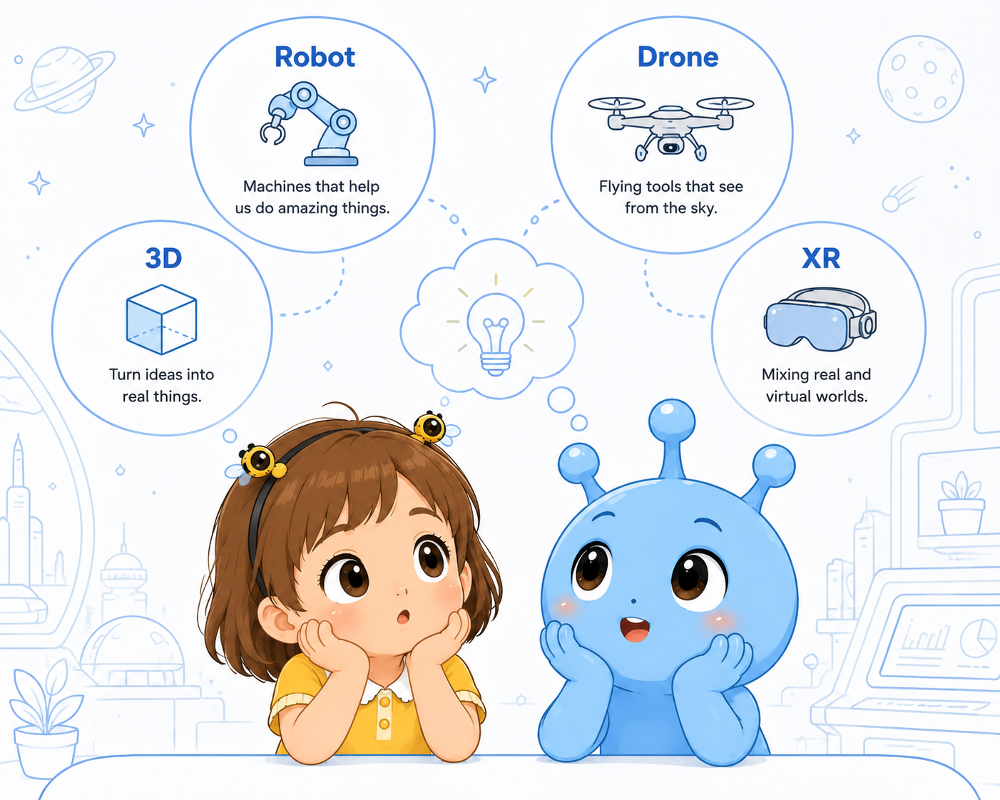

3D Printing
把数字模型变成真实物体。孩子理解 layer、material、prototype，并设计月球基地的修复零件。
Science Time
Science 页面聚焦四个清晰主题：3D Printing、Robots、Drones、Vision Pro / Spatial Computing。孩子不会死记概念，而是学习它们如何帮助月球城市建造、感知、移动和表达。

把数字模型变成真实物体。孩子理解 layer、material、prototype，并设计月球基地的修复零件。
机器人通过 sensors 感知环境，通过 instructions 完成任务。孩子思考机器人能帮助人类什么，也不能替代什么。
螺旋桨推动空气产生 lift。孩子用简单英文解释 flight、signal、mission 和 safe landing。
Vision Pro 类空间计算让数字信息叠加到真实空间。孩子学习 hologram、interface、virtual object。
所有科学解释都基于真实原理：材料层叠、传感器、升力、空间界面。表达会简化，但不会伪科学。
Future Technology Vocabulary
每个主题都配有可说出口的句型：A drone can fly. The sensor can see light. A 3D printer makes layers. A hologram shows information in space.